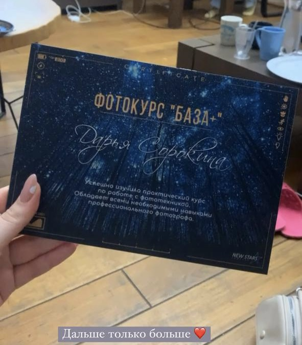

Про мене
Усім привіт! Мене звати Даша, я фотограф із Харкова. Фотоапарат уже в руках тримаю 5 років, але 2 роки старанно практикуюся, працюю і з кожною зйомкою вдосконалююся. У 2021 році пройшла курси у команди "New Star company" де навчилася багато чому. І практикуюся на своїх зйомках. Щоб бути до вас ближче, розповім вам із чого взагалі все у мене почалося. Майже 5 років тому в 2018 році мені потрібні були фотографії для своєї особистої сторінки в Інстаграм, і ми з подругою просто вирішили спробувати щось нове для себе, адже фотоапарат у мене вже був. І 2 роки я робила фотографії для себе, подруг, знайомих, не знаючи до чого все призведе. Навесні 2021 року, мене покликали в модельне агенство, де я вчилася працювати з моделями, з великою кількістю людей, звісно знайшла багато нових знайомств, яких і надалі запрошую на свої зйомки, коли хочу втілити ідею в реальність. У серпні 2021 року я пройшла курси, навчилася працювати в студії, і знайшла ще більше знайомств. Восени 2021 року мене покликали ще в одне агенство, дитячої модельної школи, де до лютого 2022 року я працювала і втілювала всі свої ідеї. Але 24 лютого життя ніби зупинилося, і я призупинила свою роботу, тому що було дуже складно продовжити, здавалося ніби я починаю все з самого початку. Але через кілька місяців, я не розгубилася, а продовжила працювати далі і радувати клієнтів своєю творчістю.